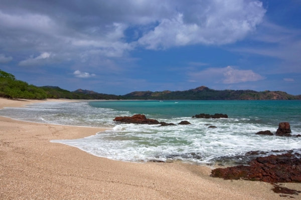

Playa, surfeo y alegria

Guanacaste, una provincia en la frontera del Pacífico y al noroeste de Costa Rica, es conocida por sus playas y un parque biodiverso. Aquí se ubica el Parque Nacional Santa Rosa con un raro bosque tropical seco, sitios para practicar surf y 250 especies de aves. Guanacaste tiene infinitas playas, como playa Blanca, con aguas tranquilas, y playa Hermosa, que es popular para hacer buceo y deportes acuáticos. La península Papagayo tiene complejos turísticos lujosos y campos de golf.